📅 星露谷历
不定期出版
🐦 鹈鹕日报
镇民身边的新鲜事🌾 星露谷农业学院2026届毕业典礼圆满结束！
星露谷农业学院 2026 届毕业典礼在刘易斯的主持下盛大举行。尽管预报"90% 概率下雨"，但法师施法让现场阳光明媚。毕业生以农业、矿工、钓鱼三系为主力，矿工系创下平均下矿 300 层新纪录……刘易斯镇长误将证书颁给自己铜像？点击标题查看完整毕业特刊报道👆
 ✦
✦
 ✦
✦
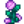
✦ ✦
✦

🌱 春季播种季到来！皮埃尔小店推出新作物种子
新的一年开始了！皮埃尔的杂货店现已上架春季作物种子。防风草、绿豆、草莓……赶紧来选购吧！
🎣 威利的钓鱼大赛即将开幕
一年一度的鹈鹕镇钓鱼大赛将在夏季第一天举行！冠军将获得神秘奖品，欢迎各位村民踊跃参加。
🍄 秘密森林发现新品种蘑菇
据德米特里厄斯研究员报告，秘密森林深处发现了一种从未记载过的蘑菇品种，初步命名为"星露菌"，据说可以提升体力。
🏡 离地而居
农场生活 · DIY 小贴士🌿 【春季小提示 · 第一期】
🌤 春季1日：给所有新人一个提示：在等待第一次收成的同时，你可以去砍柴和收集野生牧草以挣取些额外收入！
🌤 春季4日：给星露谷的居民一个提示。去查看下生长在小镇西南部的野葱，小镇的西南方是河川与大海交汇的地方。偶尔能找到一簇簇的野葱从泥土中冒出来。
🌤 春季8日：接下来就说说篱笆吧。篱笆有助于抑制杂草的蔓延和保护你的庄稼。篱笆还可以让农民圈养他们的牲口。一般的木篱笆很快就会破损，但是石头、铁以及硬木做的篱笆可以用很久！
🌤 春季11日：乌鸦会来捣乱？看来你需要一个稻草人！在你的农场设置一个稻草人，可以把乌鸦吓退到百里之外。一定要保护好珍贵的庄稼！还有一件事……你如果需要更大空间的背包来装道具的话，可以到当地的杂货店去看看。
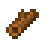
✦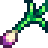
✦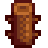
✦
🌿 【春季小提示 · 第二期】
🌤 春季15日：美莓成熟的季节到了！整个乡村的草丛中都布满了小巧而多汁的美莓，你可以随意采摘！把他们采摘下来出售，就可以挣到一笔额外的收入。
🌤 春季18日：啊，清爽的雨……这是农民的最好朋友！下雨时，你就不用亲自去浇灌庄稼了。要充分利用这种天赐良机！
🌤 春季22日：甩出你的鱼竿去钓条大肥鱼，钓到的鱼可以拿去卖！较闲时钓鱼可以挣取额外收入。鱼钩抛离陆地的距离决定了你能钓到什么样的鱼……其他影响因素还有地点、季节、时间以及天气！
🌤 春季25日：果树需要一个季节的时间来生长，所以，要提前种下！如果你新种下的果树周围的没除草干净，果树的生长就会受到影响。当你的果树长成之后，只要是在成熟的季节，它就会每天为你结出可口的果子。你该开始谋划了！
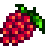
✦ ✦
✦
 ✦
✦

☀️ 【夏季小提示 · 第一期】
🌤 夏季1日：夏天来了，可以种植各种各样新的农作物了！就拿啤酒花来说吧。它的藤蔓成长起来需要一段时间，不过，一旦长成，就每天都会结出丰硕的果实。所以祝你好运吧！
🌤 夏季4日：下面这些鱼，你只有在夏天才能找到：麻哈脂鲤，可以在白天的森林河流中找到。虹鳟鱼，可以在白天的森林河流和山涧找到。河豚，可以下午时分的大海中找到。还有章鱼，可以在早晨的大海中找到。可以的话，就抓住它们！
🌤 夏季8日：我们来说说玉米吧。这是一种非同寻常的农作物，因为它可以生长两季。没错，季节变迁的时候，很多农作物都会枯萎，可是玉米却能够继续生长。你可以在夏季和秋季种植玉米。那就快去行动起来，去种一些玉米吧！
🌤 夏季11日：从明天开始，大量的贝壳和珊瑚会被冲到全世界的海滩上。我不是一位科学家，但是，我听说这和螃蟹的交配季节有关系。不管怎么样，你可以利用当地的海滩挣一笔大钱。
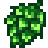
✦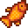
✦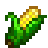
✦
☀️ 【夏季小提示 · 第二期】
🌤 夏季15日：要在镇上做一次SPA？静静地躺在冒着热气的泉水中，放松自己，补充能量。啊……感觉真美好啊，不是吗？
🌤 夏季18日：夏天肯定出现闪电风暴。如果你知道如何制作避雷针，那么你可以收集闪电来制作电池。这些电池可以出售或者用于加工其他物品！
🌤 夏季22日：大多数小镇上的杂货店门口都张贴了季节历。时而看一下季节历，确实不错的，你可以了解到社区里的一些时事。同时，一定要看一下有么有招聘广告！
🌤 夏季25日：秋天就快到了！毋庸置疑，秋天对于农民来说，是一个丰收的季节，所以，一定要存下一些钱来买新的种子哦。如果你还没更换过喷壶，那现在是一个好时机。
 ✦
✦
 ✦
✦
 ✦
✦

🍁 【秋季小提示 · 第一期】
🌤 秋季1日：我们来说说向日葵吧。当你收割向日葵的时候，你不仅获得漂亮的花朵，还可以获得一些种子。你可以再次种下这些种子或拿去卖。想想就有点小激动！
🌤 秋季4日：如果你是一位小镇上的农民，那么，你迟早会被邀请去举办一场所谓的"农庄展"。具体来说，你需要展示9件最能突出你的才能的物品。尽量挑选出高质量、高价值的物品，而且种类一定要丰富。鱼、矿石、手工艺品、水果以及蔬菜都适合出展！
🌤 秋季8日：黑莓成熟的季节到了！乡村的所有草丛中都布满了成熟的果实。你可以出去自己看看！
🌤 秋季11日：鱼类聚焦：鲑鱼。秋天，鲑鱼会回到它们的产卵地进行产卵。所以河流里面会充斥着鲑鱼！只有秋天才会有垂钓到鲑鱼的机会，所以好好把握这个机遇吧。
 ✦
✦
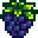
✦ ✦
✦

🍁 【秋季小提示 · 第二期】
🌤 秋季15日：有树液采集器吗？聪明的采集者知道如何使用它们。你可以把它们固定到野生树上。枫树会流出枫糖浆，橡树会出树脂，松树会流出松焦油。糖浆是最珍贵的，不过，所有树上的产物都有其用途！
🌤 秋季18日：冬天马上来了。确保你已经为动物们准备了充足的干草，因为动物们冬天是不会外出觅食的。第一场寒潮来临之后，你的牧草就不会再生长了。每个筒仓可以储存240片干草，所以你要好好计算一下，看看需不需要额外建造更多的筒仓哦！
🌤 秋季22日：鱼类聚焦：鼓眼鱼。你可以在秋天和冬天雨夜找到这种鱼。任何淡水水域都有它们的身影。
🌤 秋季25日：冬天马上就要来了……这就意味着你的农活可以告一段落了。冬天里，没有庄稼可以生长，除非你建造了温室。不过，你还是可以忙其他的事的！来年的冬天你会更忙碌。
 ✦
✦
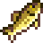
✦
⛄ 【冬季小提示 · 第一期】
🌤 冬季1日：冬天……此是整个世界都会安静下来的季节。现在是采矿、钓鱼以及聚会的大好时机。更换你的工具，为春天的耕种做好准备。或者，让当地的木匠为你的农场打造些木具。储备资源，更换工具，为来年做好充分的准备。
🌤 冬季4日：想知道怎样才可以获得"精制石英"吗？你只需将一块普通的旧石英放入炉内。然后用一些煤炭来起火。
🌤 冬季8日：砍柴时找到了一些树木的种子？你可以将种子种到地里，这样，一棵新的树就会长出来了。发挥你的创造性吧！
🌤 冬季11日：下面这些鱼，你只有在冬天才能找到：墨鱼和蛇鳕鱼。墨鱼可以在夜晚的大海中抓到。蛇鳕鱼则出现在淡水湖中。当然，也有传言说还有一些非常稀有和奇特的鱼，只有在特别的季节中才会出现。但是我没有它们的相关资料。
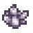
✦ ✦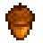
✦
⛄ 【冬季小提示 · 第二期】
🌤 冬季15日：我们来说说晶球吧。晶球是中空的石头，通常含有珍贵的矿物。只需一点辛苦费，铁匠就可以帮你敲开它们。晶球也有很多种类，每种晶球都含有不同的矿物。不过，稀有的"混合晶球"则会含有所有种类的矿物。
🌤 冬季18日：如果你想让某些人开心，你就得在他们生日的时候送上他们最喜欢的礼物！信我没错。
🌤 冬季22日：你见过三根细小的棕色茎秆从地里冒出来吗？一般上很难发现。但你要是在该位置挖掘，就一定会找到些东西。不要问我个中原理。
🌤 冬季25日：是否很想挖一挖你邻居的垃圾堆？嘿，如果你真有这种奇葩想法，那就确保在没有人看见的时候才去挖。如果被人发现，那就会恶心到邻居，影响邻里之间的友谊。除非对方跟你一样奇葩。
 ✦
✦
 ✦
✦
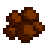
✦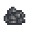
🌿 【春季小提示 · 第三期】
🌤 春季1日：新年到了。好好留意一下当地的杂货店中有没有什么新型种子。希望你已经在冬天时更换过工具，为新的一年做好了准备！
🌤 春季4日：鱼类聚焦：鳗鱼。鳗鱼可以在春天和秋天雨夜从大海中抓到。
🌤 春季8日：有厨房吗？烹饪是提升能力绝佳方式。很多菜肴不仅会赋予你能量，而且还可以临时提升你的技能、速度以及其它能力。是不是想想就有点小激动？
🌤 春季11日：道具聚焦：蟹笼。经验丰富的垂钓者都懂得如何制作蟹笼。除了抓螃蟹外，蟹笼还可以用来抓取淡水湖和咸水湖中的各种水生生物。只要将蟹笼放入水中，并装入诱饵。第二天再回来，看看蟹笼中有没有捕获什么东西。如果想继续使用，那就得重新装入诱饵。
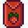
✦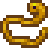
✦ ✦
✦
🌿 【春季小提示 · 第四期】
🌤 春季18日：我们来说说蜂蜜吧。顾名思义，蜂蜜就是蜜蜂产出的蜜糖。如果你的蜂房附近有鲜花开放，那么，你的蜜蜂会产出美味的蜂蜜。否则，你只能收获到"野蜂蜜"。厉害吧？
🌤 春季22日：对于冒险者，我有个提示！不要忘记武器的特别攻击！宝剑可阻挡敌人的攻击，对付史莱姆很有用。棍棒可以敲击地面以震飞敌人……匕首可以用来施展瞬间三连击！出外行走要注意安全哦。
🌤 春季25日：鹈鹕镇附近有个著名的冒险者公会。会长马龙制定了一个奖励计划来激励勇士前往当地的山洞中击杀怪物。冒险者杀死大量怪物之后，可以获得相应的强大道具。墙上张贴了海报，里面写了相关的详细信息。加油吧！
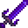
✦
☀️ 【夏季小提示 · 第三期】
🌤 夏季1日：听说有些人会守候在移动的火车旁以拾取车上掉下来的物品。啧啧……这年头的人为了免费物品真是什么事都干得出来！
🌤 夏季4日：动物聚焦：猪。这一带的猪都受过专业训练，可以嗅找珍贵的松露。你只要放这些猪出去自由行动，然后耐心地等待就行了。收获到的松露可以加工做成油来卖。
🌤 夏季11日：鱼类聚焦：超级海参。你可以在大海中找到这种珍贵的鱼。它只会在夏天和秋天的晚上出现。
🌤 夏季15日：我知道这很难……但是，不要太担心你的马了！你可以把它们扔在任何地方，它们自己能够找到回家的路。它们是一种非常聪明和独立的动物！
 ✦
✦
 ✦
✦
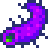
✦
☀️ 【夏季小提示 · 第四期】
🌤 夏季18日：我想到一个主意……建一个野生果园！将树液采集器固定到这些树上，然后收集珍贵的糖浆。你不照做也没事！我毫不在乎。
🌤 夏季22日：道具聚焦：酒桶。酒桶的经典用途就是制作葡萄酒。但是，你是否知道任何水果都可以做成酒？对啊。你还可以把蔬菜做成果汁呢。
🌤 夏季25日：你手头上有日志不？别忘了时常查看一下自己的日志。你容易忘记的重要信息都记录在里面了。
 ✦
✦
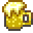
✦
🍁 【秋季小提示 · 第三期】
🌤 秋季1日：如果你得到了"稀有种子"，现在就该把它种下了。传言说这种子需要一个季节来生长，但是，我已得到确切信息，实际上只要24天。传说它长成之后会结出全世界最甜的果子。
🌤 秋季4日：有农民汇报说，当大片的花椰菜、甜瓜或者南瓜成熟时，会发生一些奇怪的事情。嗯。我是无法证实了。
🌤 秋季11日：想结婚？那你就需要一个美人鱼吊坠。宝石海这边的每个人都知道赠送美人鱼吊坠代表什么意思。当你收到这样的吊坠时，情况就比较微妙了。每个地区好像都有自己的习俗，不过，这些习俗基本上都是和海滩或海洋有关系。
🌤 秋季15日：道具聚焦：回收机。你在钓鱼的时候是否钓到过很多垃圾？在这个时代，已经不足为奇了。好吧，有了回收机，你就可以将这些垃圾转变成有用的东西。只要将你的垃圾放入回收机内，让它自行工作就行了。每一类型的垃圾可以变成不同种类的物品。
 ✦
✦
 ✦
✦
 ✦
✦

🍁 【秋季小提示 · 第四期】
🌤 秋季18日：鱼类聚焦：青花鱼。这种鱼可以在清早或者晚上找到。在秋天或者冬天的大海中寻找它吧。
🌤 秋季22日：鱼类聚焦：木跃鱼、沙鱼以及蝎鲤。据说，林跃鱼只生存在丛林深处。沙鱼和蝎鲤只能在沙漠绿洲中找到。
🌤 秋季25日：再过几天，芬吉尔共和国一带就要迎来万灵节了！你也许不知道有这么一个习俗：寻找黄金南瓜。如果你的镇上有个闹鬼迷宫，那么里面肯定藏有黄金南瓜。找到就能卖大钱哦！
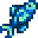
✦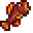
✦
⛄ 【冬季小提示 · 第三期】
🌤 冬季1日：各位，请听我一言。在你有小孩之前，务必先在家中建一个育儿室。小宝宝需要一张婴儿床！
🌤 冬季4日：道具聚焦：宝石复制机。这一款神奇的机器可以无限制地复制各种宝石。只要将你想要复制的宝石放入机器内，让机器自行工作，过一段时间后，嘿嘿……财源滚滚来！
🌤 冬季8日：如果你的畜棚中有成年动物，并且畜棚还有空间……那么它们就有几率产子。
🌤 冬季11日：鱼类聚焦：鲶鱼。这是一种比较罕见的鱼，下雨时会出现。你会发现它们生存在小镇旁的河流中，以掉到水中的残羹剩饭为食。它们不喜欢炎热的天气，所以，在夏天时就别煞费苦心来钓它们了！
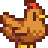
✦
⛄ 【冬季小提示 · 第四期】
🌤 冬季15日：道具聚焦：虫箱。需要源源不断的诱饵？自己制作一个虫箱吧。只要把虫箱运作起来，那每天都能收获到一些诱饵。
🌤 冬季18日：在层层积雪下方，春天的种子正在崭露头角，准备在阳光中绽放自己全新的生命。当春天再度来临的时候，你别太惊讶于农场的"惨状"，只要下点功夫清理一番就好了！
🌤 冬季22日：如果你有一个淘金盘，那一定要多留意水中是否有发光耀眼的东西。水中经常会有珍贵的矿石出现，免费的哦！
🌤 冬季25日：各位，我要宣布一件事情。我即将退休，这是最后一档离地生活节目。这段日子我过得很开心，我会想念你们的。哦，我已经告诉电视台，让他们明年开始进行重播。照顾好自己！
 ✦
✦
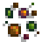
✦ ✦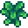
👑 酱料女皇
每周三 · 美食烹饪时间👑 《酱料女皇》—— 鹈鹕镇最受欢迎的烹饪节目
《酱料女皇》是教玩家学会烹饪食谱的电视频道。从春季7日起，前两年会在每周日播出新的食谱。在每周三会重播上一个星期天播出过的食谱。重播时会优先播出曾经播出过但玩家尚未学会的食谱。每周日播出的食谱共32种，以2年一轮重复播放。
✦
✦
✦
✦